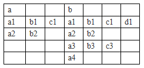

小 A 是 B 公司的一名 PM(product market)。B 公司越来越注重产品使用情况分析，而小 A 的工作就是整天对着一堆数据分析来分析去，没完没了。其中有一个操作是小 A 很头疼的，就是要把多个 csv 文件的数据拷到同一个 excel 文件中去。
有一天小 A 满怀期待地找到了你，一个高级程序员，她想让你写程序帮她完成这个简单重复性工作。这不是坑爹吗，直接操作 excel 还要用到第三方的库，还不如直接写到 csv 文件中，让她再手动去转成 excel 文件。经过内部沟通协调，最终定下了这个方案。
csv 是一种 excel 可支持和格式，且存储方式非常简单。它实际上就是用“,”来分隔相邻的两个列。比如以下三行数据
a,a,a
b,,b
,c,c
表示的就是
$\begin{array}{|c|c|c|} \hline a&a&a \\ \hline b&&b \\ \hline &c&c \\ \hline \end{array}$
现在小 A 想做的就是把各个文件按照从左往右的顺序拷到同一个文件当中。比如文件 $a$ 的数据是
a1,b1,c1
a2,b2
文件 $b$ 的数据是
a1,b1,c1,d1
a2,b2
a3,b3,c3
a4
那么她所希望的最终结果是

这个结果在csv文件里就是
a,,,b,,,
a1,b1,c1,a1,b1,c1,d1
a2,b2,,a2,b2,,
,,,a3,b3,c3,
,,,a4,,,
以上结果的第一行是每一个文件的文件名，文件名与相应文件的第一列对齐。如果相应文件不止一列，那么其它列用空的单元格来补充。
输入的 csv 文件里保证了每一行的末尾都没有“,”，也就是说像 $a$ 文件的第 $2$ 行的第 $3$ 列一样，如那一格是空的，那么在 b2 后面是没有“,”的。
输出的 csv 文件里因为是程序的输出结果，为了简化程序，如果末尾是空的，那么还是会显式输出“,”，如以上的结果所示。
输入文件保证至少有一行一列非空。
输出的文件要保证下一个文件的第一列要紧邻着上一文件的最后一个非空列的右面。最后一个文件只输出到最后一个非空列。
 Comet OJ
Comet OJ